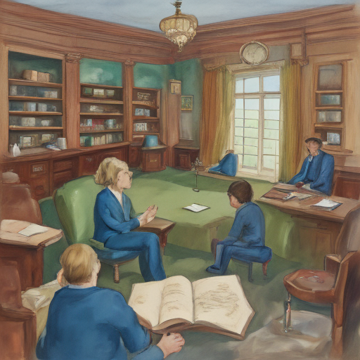

Today in New Hampshire Senate, I couldn't shake the feeling of Ashley Moody's decline as we debated the state budget. It felt like a personal loss to me, watching someone so passionate and influential lose their voice on the floor. The room was quiet, everyone focused but with an underlying tension that spoke volumes about our changing times.

Keywords: New Hampshire Senate, Ashley Moody, South Africa decline
Fictional diary entry.